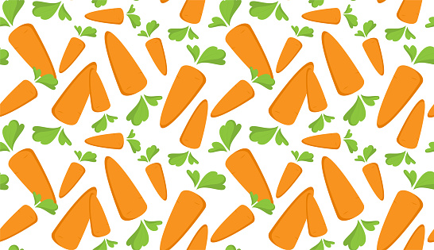
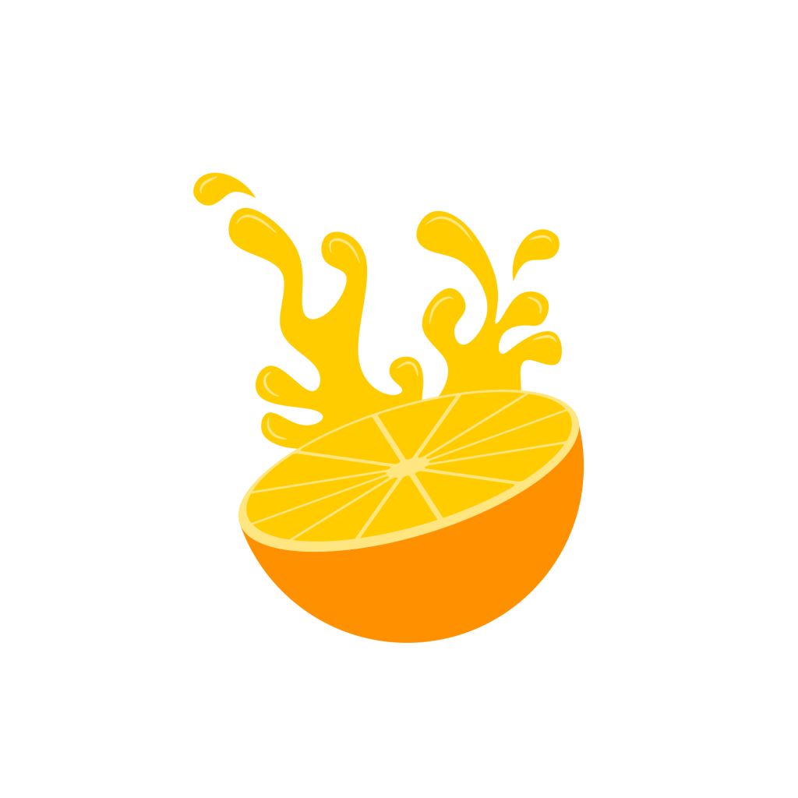
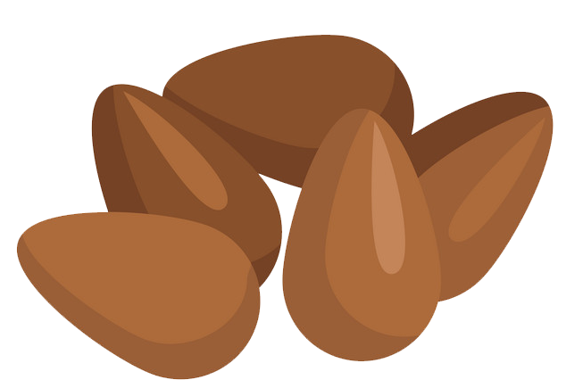
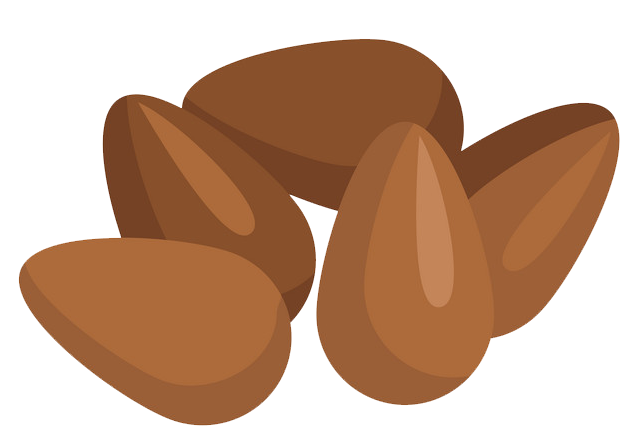

Account Page



Edrick Lloyd Defeo
Vegetarian
a person who does not eat meat, and sometimes other animal products, especially for moral, religious, or health reasons. IS ME!
INTERESTS

Orange
Citrus × sinensis
Citrus × sinensis, also known as the sweet oranges, is a commonly cultivated family of oranges that includes blood oranges and navel oranges.
Tofu
(Glycine max (L.) Merr
A high-quality source of calcium, isoflavones, and plant-based protein, tofu is produced by curdling soymilk with a calcium or magnesium salt.
 Broccoli
Brassica oleracea var. italica
Broccoli is an edible green plant in the cabbage family whose large flowering head, stalk and small associated leaves are eaten as a vegetable.

Flax Seed
Linum usitatissimum
It is cultivated as a food and fiber crop in regions of the world with temperate climates.
Broccoli
Brassica oleracea var. italica
Broccoli is an edible green plant in the cabbage family whose large flowering head, stalk and small associated leaves are eaten as a vegetable.

Flax Seed
Linum usitatissimum
It is cultivated as a food and fiber crop in regions of the world with temperate climates.